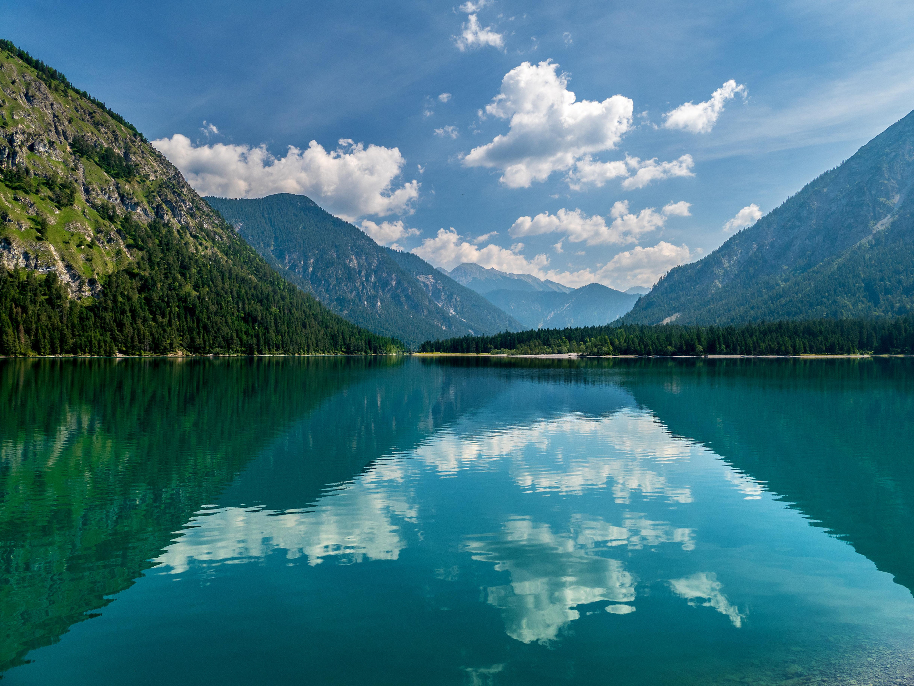

Реки России
Исследуйте великие реки нашей страны, их географию, историю и экологическое значение. От Волги до Енисея - все главные водные артерии.
Исследовать реки

Озёра России
Откройте для себя самые красивые и значимые озёра России. Байкал, Ладожское, Онежское и многие другие жемчужины нашей природы.
Исследовать озёра